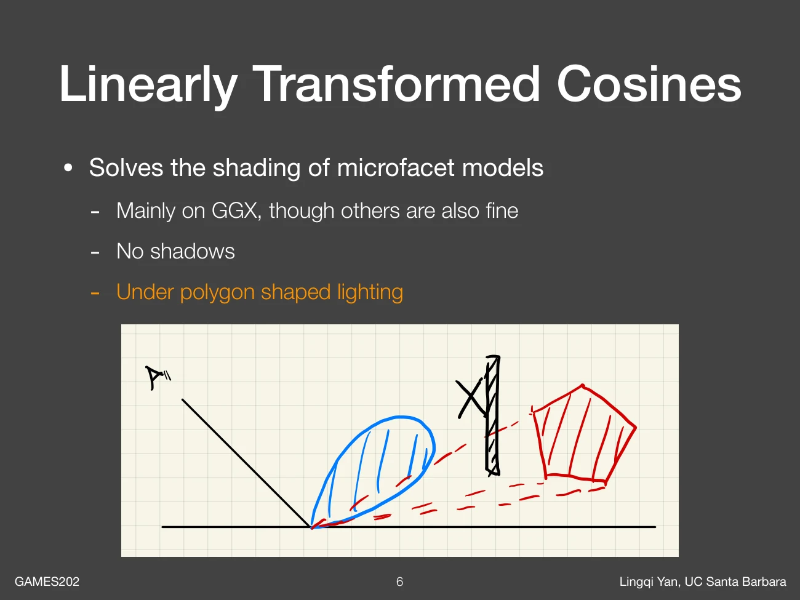
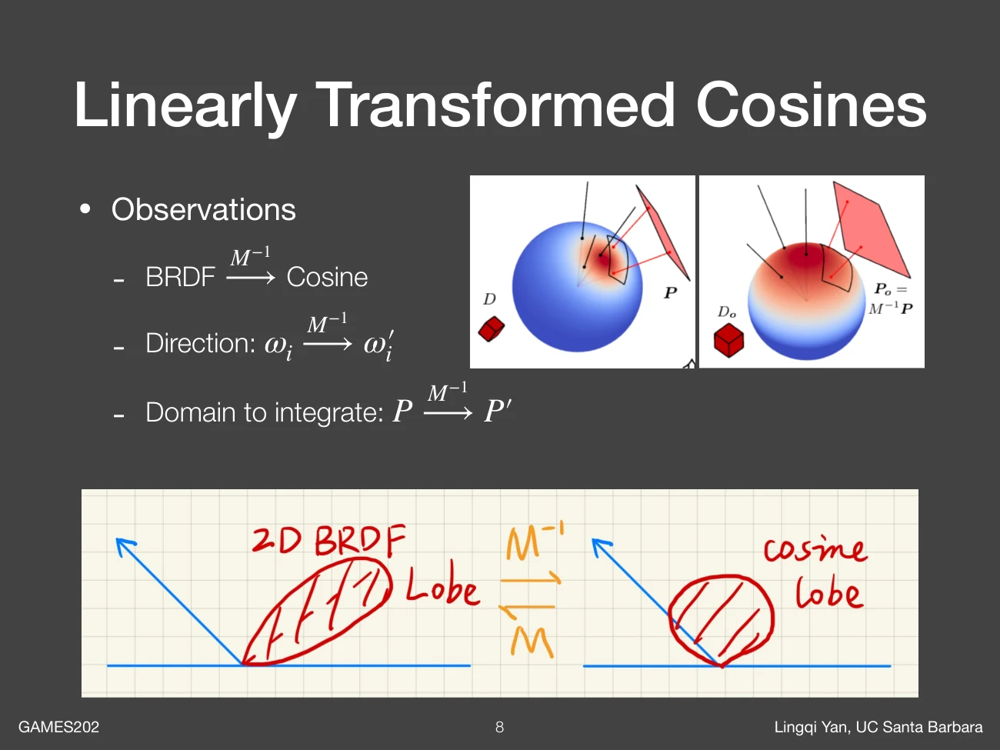
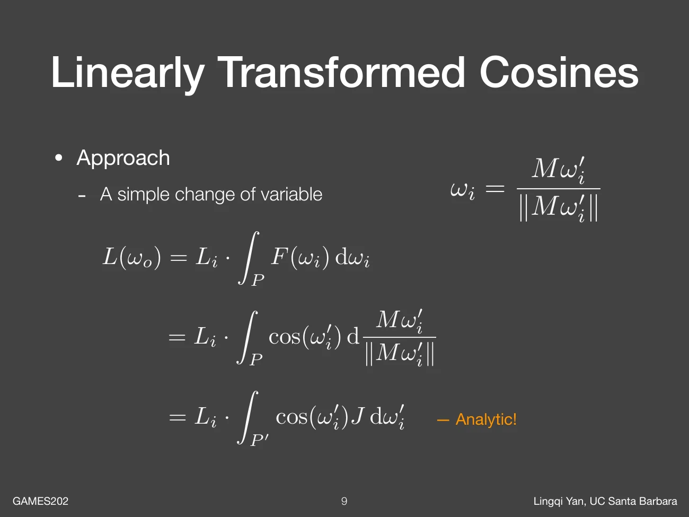
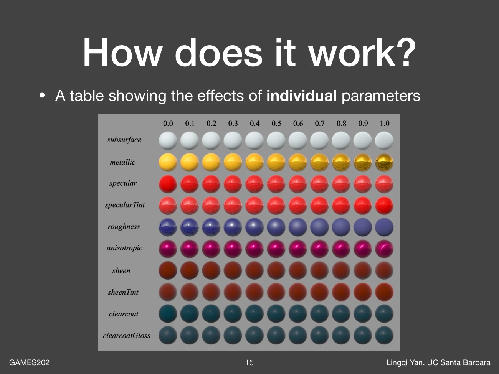
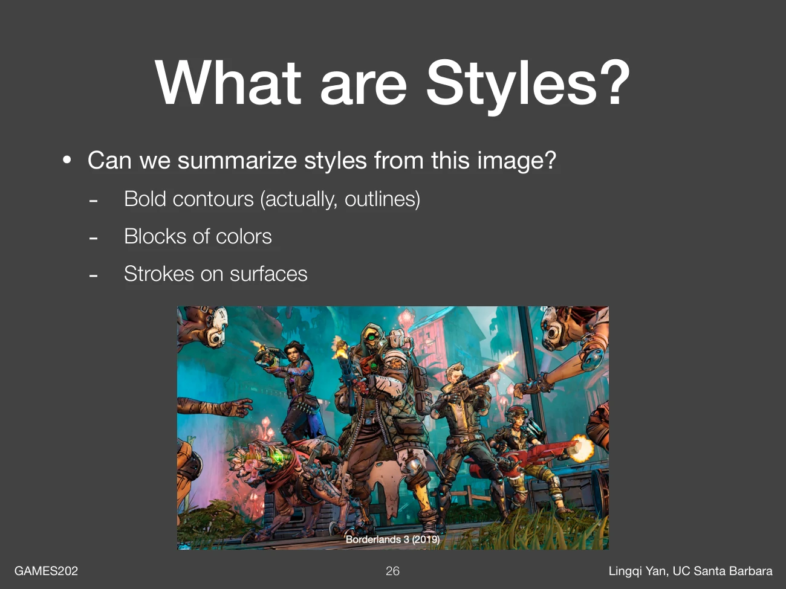
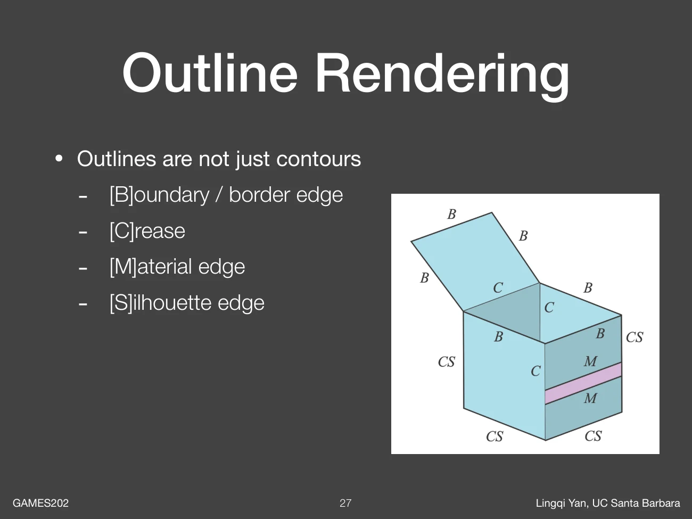
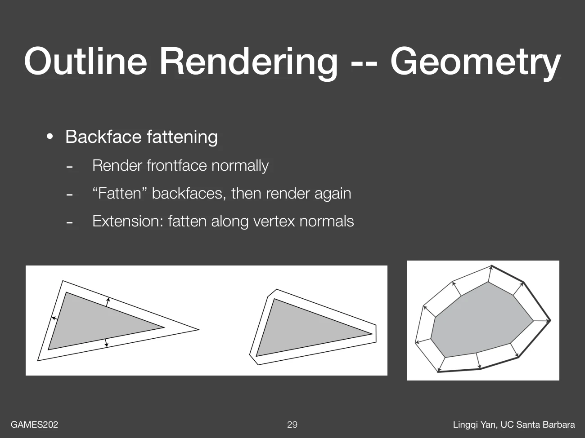
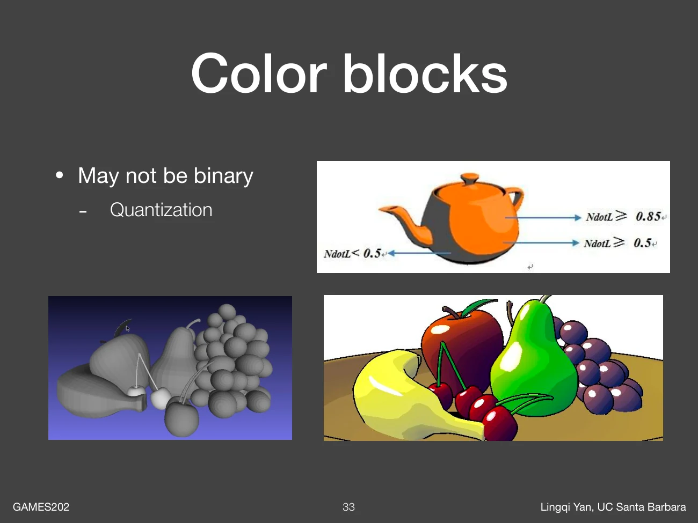
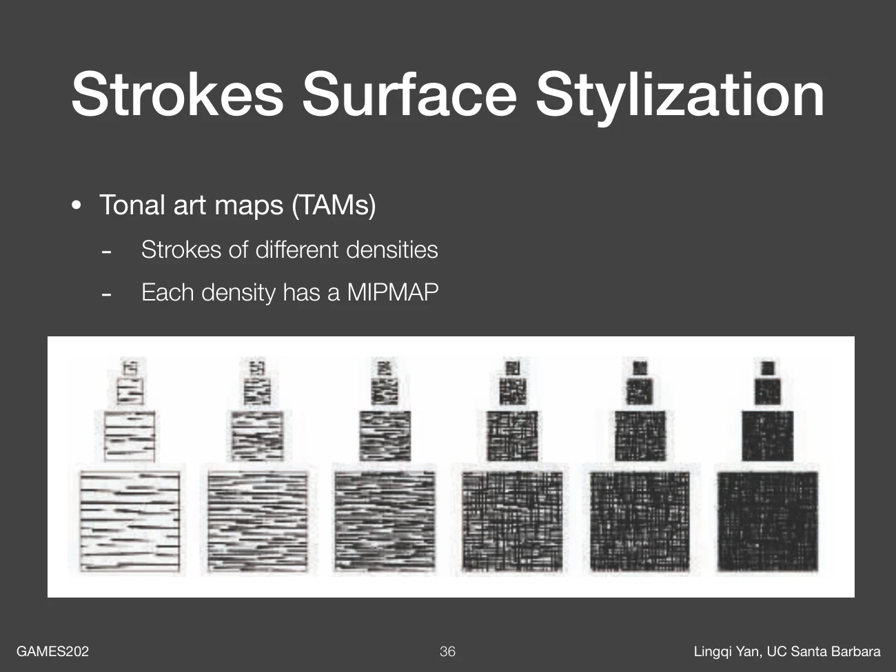

第 11 讲：实时物理材质（续）与 NPR 风格化渲染
用线性变换余弦（LTC）解析求解多边形光源下的微表面着色，并系统梳理非真实感渲染（NPR）的实时实现手段。
◆ 学完这一讲，你应该能
理解 LTC 的核心思想：把任意出射的 2D BRDF 波瓣线性变换成余弦波瓣，从而让多边形光源积分有解析解
能写出 LTC 的变量替换公式，并说明雅可比行列式在其中的作用
说出 Disney Principled BRDF 的设计原则、优缺点，以及它为何在工业界被当作 PBR 使用
区分照片级真实渲染与 NPR 的目标差异，并能列举 NPR 的典型应用
掌握轮廓线渲染的三种做法：着色法线法、背面膨胀法、图像边缘检测法
理解色块（硬着色/色调分离/量化）与笔触表面风格化（TAMs）的实现思路
核心结论速记
LTC 把 GGX 等微表面 BRDF 波瓣通过一个 3×3 线性矩阵 M 变换成余弦波瓣，同时把多边形光源也做同样变换，积分就变成余弦对变换后多边形的解析积分。
变量替换后出现雅可比行列式，但 LTC 的巧妙之处在于变换后的积分恰好是余弦波瓣对变换后多边形的积分，可以解析求出，不需要数值采样。
LTC 只处理着色，不处理阴影；它主要针对 GGX，但方法对其他微表面模型也适用。
Disney Principled BRDF 的目标是“艺术家可调”，用少量 0~1 的直觉参数覆盖大量材质，不追求严格物理正确，但工业界仍称其为 PBR。
NPR 在实时渲染中等于“快速可靠的风格化”，它从真实感渲染出发，通过抽象和强化重要部分来产生艺术外观。
轮廓线渲染有三类：基于着色法线变暗、基于几何的背面膨胀、基于图像的 Sobel 边缘检测。
色块可以通过硬着色（对着色结果阈值化）、色调分离（对最终颜色阈值化）或量化实现，且不一定是二值。
笔触风格化用预生成的笔触纹理（TAMs）替换逐点着色，不同密度对应不同 MIPMAP 层级，以兼顾密度与连续性。
011. 为什么需要 LTC：多边形光源下的微表面着色难题
上一讲我们学了微表面 BRDF（NDF、阴影遮蔽项、Kulla-Conty 多次反弹补偿、Disney 原则化 BRDF），也提到多边形光源下的着色可以用线性变换余弦（Linearly Transformed Cosines, LTC）来做。这一讲先把 LTC 讲完。
先想清楚问题：实时渲染里经常用面光源（比如 UE 的 Rect Light、Unity 的 Area Light），它们是多边形形状。用微表面 BRDF 对多边形光源做积分，一般没有解析解，只能采样。但实时渲染每帧只有几毫秒，采样几十个点也不够收敛，噪点会很明显。LTC 的目标就是：在无阴影、多边形光源的假设下，把微表面 BRDF 的着色积分变成解析可求的形式。
课件明确说了 LTC 的适用范围：主要针对 GGX，其他微表面模型也可以；不处理阴影；光源是多边形。这三点很重要，后面在引擎里用的时候要记住边界。
直觉上，LTC 做的事情很像“把弯曲的波瓣掰直”：GGX 的 BRDF 波瓣在半球上是歪的、有长尾的，直接积分很难；但如果能找到一个线性变换，把这个波瓣“掰”成一个标准的余弦波瓣，同时把光源多边形也做同样的变换，那么积分就变成“余弦波瓣对多边形”的积分——这个积分有解析公式。这就是 LTC 的全部魔法。

常见坑
以为 LTC 能处理阴影 → 实际上 LTC 只解决着色积分，阴影要另做（如 shadow map）→ 在引擎里要确认面光源是否投射阴影，LTC 部分不负责。
把 LTC 用在非多边形光源（如球光源）上 → 变换后的积分不再解析 → 球光源需要其他方法（如球面分布采样或近似）。
UE / Unity 落地
UE 的 Rect Light 在 Lumen 之外的传统路径下，面光源着色有类似 LTC 的解析近似；Unity 的 Area Light 在 Progressive Lightmapper 里是离线烘焙，实时下常用近似。
在 UE 材质里写自定义光照时，若要用 LTC，需要拿到光源的多边形顶点和 BRDF 参数，通常通过 Custom 节点或光照函数（Light Function）实现。
022. LTC 的核心：变量替换与雅可比
LTC 的关键思路可以拆成三步：
- 任意出射的 2D BRDF 波瓣都能被线性变换成余弦波瓣。也就是说，存在一个 3×3 矩阵 \(M\)，把 BRDF 波瓣 \(f(\omega_i, \omega_o)\) 变成余弦波瓣 \(\cos(\omega_i')\)。
- 光源形状也跟着变换。原来的多边形光源 \(P\) 经过 \(M\) 变成新的多边形 \(P'\)。
- 变换后的积分是解析的。余弦波瓣对多边形 \(P'\) 的积分有闭式解。
写成公式，原来的着色积分是： \[ L(\omega_o) = \int_P L_i \cdot f(\omega_i, \omega_o) \, d\omega_i \] 做变量替换 \(\omega_i' = \frac{M\omega_i}{\|M\omega_i\|}\)，积分变成： \[ L(\omega_o) = \int_{P'} L_i \cdot \cos(\omega_i') \cdot J \, d\omega_i' \] 其中 \(J\) 是变量替换带来的雅可比行列式。课件强调：这个积分是解析的，因为被积函数变成了余弦对多边形。
这里最容易迷糊的是雅可比：变量替换不是免费的，面积会缩放。但 LTC 的推导表明，变换后的积分恰好可以写成余弦波瓣对变换后多边形的积分，雅可比被吸收进变换里，最终仍然有解析表达式。实际实现时，我们不需要手推雅可比，而是查表得到 \(M\) 和相关的系数。
课件还画了方向变换的示意：BRDF 的入射方向 \(\omega_i\) 经过 \(M\) 变成 \(\omega_i'\)，积分域 \(P\) 变成 \(P'\)。理解这张图，就理解了 LTC 的几何本质：同一个积分，换一个坐标系看，就变简单了。


补充说明
课件没有给出完整的解析公式细节，这里只描述结构；实际实现请参考 LTC 原始论文和引擎源码。
常见坑
变量替换时忘记归一化方向向量 → \(\omega_i'\) 不是单位向量，余弦项算错 → 一定要写 \(\omega_i' = M\omega_i / \|M\omega_i\|\)。
以为雅可比可以忽略 → 面积缩放没算，亮度整体偏亮或偏暗 → 实现时用查表系数，不要手写近似。
矩阵 M 用错（比如没有按粗糙度查表）→ 高光形状和粗糙度不匹配 → 确认 M 是从预计算表中按 roughness 和视角插值得到的。
UE / Unity 落地
UE 的 Rect Light 在传统 deferred 路径下使用 LTC 的解析近似（源码里在 LightRendering 相关模块），材质侧不需要手动实现。
Unity 的 HDRP 面光源也采用类似的 LTC 解析积分；URP 默认不支持实时面光源，需要额外方案。
LTC 着色的伪代码结构（不是完整实现）（hlsl）
// 输入：多边形顶点、视角、roughness
// 1. 根据 roughness 和视角查表得到 M（3x3）和参数
// 2. 把多边形顶点变换到 LTC 空间：v' = normalize(M * v)
// 3. 在 LTC 空间计算余弦波瓣对多边形的解析积分
// 4. 乘上光源强度和 BRDF 系数
float3 LTC_Shade(float3 wo, float roughness, PolygonLight light) {
float3x3 M = LTC_Lookup(roughness, dot(wo, N));
float3 integral = LTC_IntegratePolygon(M, light.vertices, wo);
return light.intensity * integral;
}033. Disney Principled BRDF：艺术家友好的“原则化”模型
上一讲已经提过 Disney Principled BRDF，这一讲展开讲它为什么存在、设计原则是什么、优缺点如何。
动机：没有哪一种物理材质模型能完美表示所有真实材质，比如大多数微表面模型缺少漫反射项；而且物理参数对艺术家不友好，比如“复折射率 \(n-ik\)”这种参数，艺术家根本不知道怎么调。所以 Disney 的目标是：艺术可调，不追求严格物理正确。但工业界仍然把它叫 PBR（Physically-Based Rendering），这更多是营销和习惯上的称呼。
什么叫“principled”（原则化）？课件列了几条设计原则：
- 用直觉参数而不是物理参数；
- 参数尽量少；
- 参数在合理范围内是 0 到 1；
- 允许在合理范围外继续推参数（如果这样有意义）；
- 所有参数组合都尽量稳健、合理。
这些原则翻译成人话就是：让艺术家用“感觉”调材质，而不是用“物理公式”调。比如“粗糙度”“金属度”“高光”这些滑块，比“复折射率”直观得多。
优缺点：优点是易理解、易控制，一个模型覆盖大量材质，且有开源实现；缺点是不是物理正确，参数空间巨大（组合爆炸，很难穷举测试）。课件还问了一句“但这是大问题吗？”——在工业界，艺术家效率和可控性往往比严格物理正确更重要，所以 Disney 模型被广泛采用。
在引擎里，UE 的默认材质模型（Default Lit）和 Unity 的 Standard/HDRP Lit 都深受 Disney 原则化 BRDF 影响：Metallic、Roughness、Specular 这些参数就是“直觉参数”的典型例子。

常见坑
把 Disney 参数当物理量去反推折射率 → 参数本身不是物理量，反推没有意义 → 把它当艺术控制量用。
以为参数在 0~1 之外就不能用 → 课件明确说允许在合理范围外推 → 但要注意极端组合可能不稳健。
在引擎里同时开 Metallic 和 Specular 调得很高 → 能量不守恒，材质发白 → 遵循引擎的材质工作流，金属度接近 1 时漫反射应为 0。
UE / Unity 落地
UE 的 Default Lit 材质：Base Color、Metallic、Roughness、Specular 就是 Disney 原则化参数的工程化。
Unity 的 HDRP Lit：同样有 Metallic、Smoothness（Roughness 的反向）、Specular 等参数，思路一致。
两者都提供“材质实例”让艺术家在 0~1 范围内快速调参，对应课件的设计原则。
044. NPR 是什么：从真实感出发的风格化
NPR（Non-Photorealistic Rendering，非真实感渲染）在实时渲染里有一个很实用的定义：快速且可靠的风格化（fast and reliable stylization）。注意“快速”和“可靠”两个词——离线可以慢慢做风格化，实时必须每帧出图且不能闪。
先对比真实感渲染：目标是“和照片无法区分”，关注光照、阴影、材质等物理量。NPR 的目标是“产生艺术外观”，它从真实感渲染出发，通过抽象（abstraction）和强化重要部分来达到风格化效果。这句话很关键：NPR 不是抛弃真实感，而是在真实感的基础上做减法/夸张。
NPR 的应用很广：艺术、可视化、教学、教育、娱乐等。课件举了《莱莎的炼金工房》《进击的巨人》等例子，说明 NPR 在游戏和动画里是主流需求。
那“风格”到底是什么？课件用《异度神剑》的图问：能不能总结出风格？答案是：粗轮廓线（其实是描边）、色块、表面笔触。这三样基本覆盖了后面要讲的 NPR 技术：轮廓线渲染、色块、笔触表面风格化。
一个容易被忽视的点（课件最后特别提了）：真实感模型在 NPR 里仍然非常重要。比如布料的 NPR 渲染，底层还是用真实感布料模型，再在上面做风格化。所以学好 PBR 不是白学，NPR 是站在 PBR 肩膀上的。

常见坑
以为 NPR 就是完全不用物理 → 课件强调真实感模型在 NPR 里仍很重要 → 布料、皮肤等底层仍用 PBR。
把 NPR 当成后期滤镜 → 很多 NPR 效果（描边、色块）需要在着色阶段做，后期只能做一部分 → 要分阶段设计。
UE / Unity 落地
UE 可以用 Post Process Material 做图像边缘检测和色调分离，用 Custom Depth/Stencil 做描边。
Unity 的 URP/HDRP 有 Renderer Feature 机制，可以在不同阶段插入 NPR 后处理；Shader Graph 也支持自定义光照。
055. 轮廓线渲染：着色、几何、图像三条路
轮廓线（outline）是 NPR 最显眼的特征。但课件提醒：轮廓线不只是外轮廓。它列出了四类边：
- 边界/边界边（boundary/border edge）：两个面共享的边，但只有一个面可见；
- 折痕边（crease）：两个面夹角很大；
- 材质边（material edge）：材质属性突变；
- 轮廓边（silhouette edge）：物体外轮廓。
实现轮廓线有三类方法：
（1）基于着色的方法（Shading）：把着色法线（shading normal）与视线方向垂直的区域变暗。直觉是：法线垂直于视线的地方，正是表面“转折”的地方，看起来就像轮廓。这种方法很便宜，但只能画出着色法线定义的轮廓，几何轮廓可能不准。
（2）基于几何的方法（Geometry）：最经典的是背面膨胀（backface fattening）：正常渲染正面；然后把背面沿法线方向“膨胀”一点再渲染一次，用纯色画出来，就形成外描边。扩展做法是沿顶点法线膨胀。这种方法能画出干净的几何轮廓，但膨胀量要随距离调整，否则远处会太粗或太细。
（3）基于图像的方法（Image）：对渲染结果做边缘检测，常用 Sobel 算子。可以在深度、法线、颜色等不同信息上做。优点是通用、不挑几何；缺点是可能检测出不需要的边（比如纹理内部的高频细节），需要额外过滤。
三种方法各有取舍，实际项目里经常组合使用：几何描边画外轮廓，图像描边补内部折痕。


补充说明
课件 P29 的 Sobel 算子图没有给出具体卷积核，这里不硬写数值。
常见坑
背面膨胀量固定 → 远处描边过粗、近处过细 → 膨胀量应随距离或屏幕空间缩放。
Sobel 边缘检测在颜色上做 → 纹理细节被误判为边 → 改用深度/法线缓冲，或加阈值过滤。
只做外轮廓 → 内部折痕缺失，看起来像贴纸 → 组合几何描边和图像描边。
UE / Unity 落地
UE 的 Custom Depth/Stencil 可以做背面膨胀描边：把角色画到 Custom Depth，再用后处理 Material 做边缘检测。
Unity 的 URP 可以用第二个 Pass 做背面膨胀（Cull Front），或在 Renderer Feature 里做 Sobel 后处理。
Sobel 边缘检测在 UE 里可用 Post Process Material 的 SceneTexture:Depth/Normal 节点实现。
背面膨胀描边的顶点着色器思路（hlsl）
// 第二个 Pass：Cull Front，沿法线膨胀
float4 Pos = mul(UNITY_MATRIX_MVP, float4(v.vertex.xyz + v.normal * _OutlineWidth, 1.0));
return Pos;
// 像素着色器输出纯色描边颜色066. 色块与笔触：把连续着色变成风格化图案
色块（color blocks） 是卡通风格的另一个核心。课件给了两种做法：
- 硬着色（hard shading）：对着色结果做阈值化，比如 \(N \cdot L\) 大于某个值就取亮色，否则取暗色；
- 色调分离（posterization）：对最终图像颜色做阈值化，把连续颜色映射到有限档。
色块不一定是二值的，可以是多档量化（quantization）。比如把亮度分成 3 档、5 档，看起来更像手绘。课件还提到：不同组件可以用不同风格，比如皮肤用柔和色块、衣服用硬色块，这样更有层次。
笔触表面风格化（strokes surface stylization） 则更进一步：有时候你不想要色块，而想模拟素描/手绘笔触。思路是：用预生成的笔触纹理替换逐点着色。这里有两个关键问题：
- 密度（density）：笔触多密？
- 连续性（continuity）：笔触在表面上是否连贯？
解决方案是 TAMs（Tonal Art Maps，色调艺术图）：预生成不同密度的笔触纹理，每个密度对应一个 MIPMAP 层级。渲染时根据光照强度选择对应密度的 MIP 层级，这样既有密度变化，又通过 MIPMAP 保证连续性（不会在密度切换时跳变）。
直觉上，TAMs 就是把“笔触密度”编码进 MIPMAP 金字塔：亮的地方用稀疏笔触（高层 MIP），暗的地方用密集笔触（低层 MIP），中间平滑过渡。


常见坑
硬着色阈值设得太硬 → 明暗交界出现锯齿 → 加一点平滑过渡或使用多档量化。
TAMs 密度切换不连续 → 画面闪烁 → 用 MIPMAP 三线性插值，确保密度平滑过渡。
色块和笔触同时全强度使用 → 画面脏乱 → 按组件分配风格，不要所有效果叠加。
UE / Unity 落地
UE 的 Post Process Material 可以用
Floor节点做色调分离（Posterization）。Unity Shader Graph 有
Posterize节点，直接做颜色量化。TAMs 在引擎里可以用自定义纹理数组 + MIP 采样实现，按光照强度选择 MIP 层级。
色调分离的简单实现（hlsl）
// 把颜色量化到 N 档
float3 Posterize(float3 color, float N) {
return floor(color * N) / N;
}077. 工程落地：NPR 是艺术驱动的，沟通比公式重要
课件最后给了一些“Notes”，这些是工程经验，比公式更值钱：
- NPR 是艺术驱动的。技术只是手段，最终效果由艺术需求决定。
- 但你需要有能力把艺术家的需求“翻译”成渲染洞察。比如艺术家说“这里要有边”，你要能翻译成“用折痕边检测还是轮廓边检测”。
- 沟通很重要。NPR 项目里，程序、TA、美术要反复对齐。
- 有时候风格要按角色、甚至按部件分别处理。比如主角和路人的描边粗细不同，脸和衣服的色块档数不同。
还有一个关键观察：真实感模型在 NPR 里仍然非常重要。课件举了布料的例子（Sadeghi 等人的工作）：布料的 NPR 渲染底层还是真实感布料散射模型，再在上面做风格化。所以不要因为做 NPR 就丢掉 PBR 基础。
下一讲会讲散射模型（scattering models），课件链接了 UE 的毛发文档，说明毛发渲染也是实时物理材质的重要部分。
常见坑
把 NPR 当纯技术问题 → 忽略艺术需求，做出来的效果“技术正确但不好看” → 多和美术对齐参考图。
所有角色用同一套 NPR 参数 → 主角和路人没有区分度 → 按角色/部件做参数分级。
UE / Unity 落地
UE 可以用 Material Instance 为不同角色配置不同的 NPR 参数（描边宽度、色块档数）。
Unity 可以用 MaterialPropertyBlock 按渲染器覆盖参数，避免为每个角色创建材质副本。
引擎对照表
| 概念 / 效果 | Unreal Engine | Unity |
|---|---|---|
多边形光源解析着色 | Rect Light 的传统 deferred 路径使用 LTC 近似 | HDRP 面光源使用 LTC 解析积分；URP 默认不支持实时面光源 |
原则化 BRDF 参数 | Default Lit 材质的 Base Color/Metallic/Roughness/Specular | HDRP Lit 的 Metallic/Smoothness/Specular |
轮廓线描边 | Custom Depth/Stencil + 后处理 Material 做边缘检测；或第二个 Pass 背面膨胀 | URP 第二个 Pass（Cull Front）背面膨胀；Renderer Feature 做 Sobel |
色调分离/色块 | Post Process Material 的 Floor 节点 | Shader Graph 的 Posterize 节点 |
笔触纹理 TAMs | 纹理数组 + 按光照强度选 MIP 层级 | 纹理数组 + 自定义 MIP 采样 |
NPR 后处理插入点 | Post Process Volume / Post Process Material | URP/HDRP Renderer Feature |
术语双语表
| English | 中文 | 说明 |
|---|---|---|
| Linearly Transformed Cosines (LTC) | 线性变换余弦 | 用线性矩阵把 BRDF 波瓣变换成余弦波瓣，使多边形光源积分解析可求。 |
| Jacobian | 雅可比行列式 | 变量替换时面积缩放的比例因子。 |
| Disney Principled BRDF | Disney 原则化 BRDF | 用少量 0~1 直觉参数覆盖大量材质的艺术家友好模型。 |
| Non-Photorealistic Rendering (NPR) | 非真实感渲染 | 实时下指快速可靠的风格化渲染。 |
| Silhouette edge | 轮廓边 | 物体外轮廓对应的边。 |
| Crease edge | 折痕边 | 两个面夹角很大形成的边。 |
| Backface fattening | 背面膨胀 | 把背面沿法线膨胀后渲染，形成外描边的几何方法。 |
| Sobel detector | Sobel 边缘检测算子 | 图像空间常用的边缘检测卷积核。 |
| Posterization | 色调分离 | 把连续颜色量化到有限档，形成色块。 |
| Tonal Art Maps (TAMs) | 色调艺术图 | 不同密度的预生成笔触纹理，每个密度对应一个 MIPMAP 层级。 |
课后练习
01 LTC 为什么能把微表面 BRDF 对多边形光源的积分变成解析形式？请用“变量替换”和“余弦波瓣”两个关键词解释。
查看答案
提示：
想想变换前后积分域和被积函数分别变成了什么。
LTC 找到一个线性变换 M，把任意出射的 2D BRDF 波瓣变成余弦波瓣，同时把多边形光源 P 变成 P'。做变量替换后，积分变成余弦波瓣对多边形 P' 的积分，这个积分有闭式解，所以是解析的。
02 Disney Principled BRDF 的设计原则有哪些？它为什么不是物理正确的，却仍被称为 PBR？
查看答案
提示：
从参数直觉性、参数范围、稳健性三个角度回答。
原则包括：用直觉参数而非物理参数、参数尽量少、参数在合理范围 0~1、允许合理范围外推、所有组合尽量稳健。它不是严格物理正确，因为参数是艺术控制量而非物理量；但工业界习惯把基于物理直觉的材质工作流统称 PBR，所以仍叫 PBR。
03 轮廓线渲染有哪三类方法？各举一个优缺点。
查看答案
提示：
着色、几何、图像三条路。
（1）着色法：把着色法线与视线垂直的区域变暗；便宜，但几何轮廓可能不准。（2）几何法：背面膨胀；轮廓干净，但膨胀量需随距离调整。（3）图像法：Sobel 边缘检测；通用，但可能误检纹理细节。
04 TAMs 如何同时解决笔触的“密度”和“连续性”问题？
查看答案
提示：
想想 MIPMAP 的作用。
TAMs 预生成不同密度的笔触纹理，每个密度对应一个 MIPMAP 层级；渲染时按光照强度选择对应密度的 MIP 层级，并用三线性插值在层级间平滑过渡，从而既有密度变化又保证连续性。
05 在 UE 里实现一个简单的背面膨胀描边，需要哪些步骤？
查看答案
提示：
Custom Depth/Stencil 或第二个 Pass。
方法一：把角色渲染到 Custom Depth/Stencil，再用后处理 Material 对深度/模板做边缘检测并上色。方法二：给角色材质加第二个 Pass，Cull Front，顶点沿法线膨胀，输出纯色描边。注意膨胀量随距离调整。